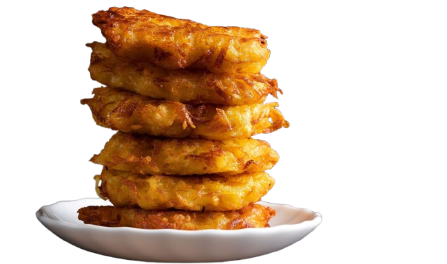

לביבות

מצרכים
-
4 תפוחי אדמה בינוניים, קלופים ומגולענים
1 בצל קטן, קלוף וגרר
2 ביצים
2 כפות קמח (אפשר גם קמח תפו"ר או קמח מצה)
1/2 כפית מלח
1/4 כפית פלפל שחור
1/4 כפית סוכר (אופציונלי)
שמן לטיגון (שמן קנola או שמן סויה מצוין)
הוראות הכנה
-
1. מגרדים את תפוחי האדמה על פומפיה גסה ומניחים בקערה.
2. סוחטים את תפוחי האדמה מהנוזלים (ניתן להניח עליהם מגבת ולסחוט היטב).
3. מוסיפים את הבצל המגורר, הביצים, הקמח, המלח, הפלפל והשugar, ומערבבים היטב עד שהחומרים יתמזגו.
4. מחממים שמן במחבת שטוחה על להבה בינונית.
5. יוצרים כפות עם תערובת הלביבה ומניחים בזהירות בשמן החם. מטגנים 2-3 דקות מכל צד עד שהן משחימות וקריספיות.
6. מניחים את הלביבות על נייר סופג להסרת עודפי שמן.
Sufganiyot

Ingredients
-
2 1/4 teaspoons (1 packet) active dry yeast
3/4 cup warm milk or water (110°F / 43°C)
2 1/2 cups all-purpose flour
1/4 cup sugar
1/4 teaspoon salt
2 egg yolks
2 tablespoons unsalted butter, softened
Oil for frying
Jam or custard for filling
Powdered sugar for dusting
Instructions
-
1. Dissolve the yeast in warm milk or water and let it sit for 5-10 minutes until foamy.
2. In a large bowl, mix flour, sugar, and salt. Add the yeast mixture, egg yolks, and butter, and knead into a smooth dough.
3. Cover the dough and let it rise for 1-2 hours, or until doubled in size.
4. Roll out the dough to 1/4-inch thickness and cut into circles using a cookie cutter.
5. Cover the dough circles and let them rise for another 30-45 minutes.
6. Heat oil in a deep pot to 350°F (175°C) and fry the sufganiyot in batches until golden on both sides.
7. Remove from the oil and place on a paper towel to drain excess oil.
8. Fill the sufganiyot with jam or custard using a piping bag, and dust with powdered sugar before serving.